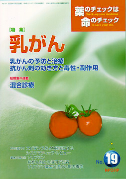

No.19 特集 乳がん 2005年7月 発行
 今年の『薬のチェックは命のチェック』は、昨年11月に開催した第4回医薬ビジランスセミナーの講演内容を順次特集しています。17号では「がん検診は予防になるか」、18号は「がん治療の壁」を解説しました。
今回の特集は、「乳がん」です。「乳がんに罹りやすい因子はあるか」「治療法は？」といったことを慶應大学医学部放射線科の近藤誠医師が解説します。また、セミナーでは取り上げていませんが、今回の特集のために、「抗がん剤の種類と効き方、毒性の現れ方」を解説し、NPOJIPの判定つき「抗がん剤の患者用説明書」を作成しました。そして、乳がん患者の会イデアフォーがまとめた、全国の主な病院への乳がん治療に関するアンケート結果や、電話相談に見る抗がん剤治療の最近の傾向など、広く乳がん治療について特集しました。
もくじ
特集
■乳がんの予防と治療
■抗がん剤の効き方と毒性・副作用
■薬の説明書（NPOJIPの判定付き）
・シクロフォスファミド
・アドリアマイシン
・エピルビジン
・メトトレキサート
・フルオロウラシル
・タモキシフェン
■『乳がん治療に関する病院アンケート』から見えるもの
■電話相談からみた最近の抗がん剤事情
短期集中連載
■混合診療について
■果たして混合診療は医療を改善するのか？
提言
■NPOJIPの提言
薬害をなくし、よい薬を普及させるために世界的な協力体制が必要
連載
■みんなのやさしい生命倫理 １９
インフォームド･コンセント（６） 形式的・形骸化
■映画の中のクスリ（12） 塩化カリウム（KCI）
■リレーエッセイ 独身女の老後と年金
■山郷から 道づくり
■EBM超入門（8）
今シーズンは白い水着が人気？？ エビデンスをより確実にするシステマティック・レビュー
■薬害の歴史（11） ソリブジン
・抗がん剤との併用で死者
・ソリブジン薬害と抗がん剤の毒性
■行ってきました
グループホーム「さくらの家」
■質問箱
Q：胃酸過多の人への市販医薬は、何を使えばいいのか？
■読者の声
・「ピルに関する情報がほしい」
・「漫画にも薬害のことが載っています」
・「角膜の細胞は丸一日で再生する！」 など
■勉強会だより
■書評
・『数字に弱いあなたの驚くほど危険な生活』
・『薬害を追う記者たち』
・『がん患者は家に帰ろう』
■NPOJIP関連書籍紹介/TIP出版物
■NPOJIP書籍申込み用紙
■編集後記
連載
薬害の歴史１０より
ソリブジン 抗がん剤との併用で死者
鯨岡秀紀 （毎日新聞記者）
帯状疱疹の治療薬として発売開始
ソリブジンは1993年（平成5）7月、帯状疱疹の治療薬として製造が承認されました。大阪にあった日本商事（注1）という会社が同年9月に発売し、画期的な新薬と言われていましたが、フルオロウラシル系（FU系）と呼ばれる種類の抗がん剤と併用した患者に相互作用が多発し、発売から１か月ほどの間に15人もの死者を出す結果となりました。
この相互作用は、ソリブジンがFU系抗がん剤の分解を妨げるため、血液中の抗がん剤の濃度が異常に高くなることが原因でした。大量の抗がん剤を使ったのと同じ状態になり、抗がん剤の副作用が強く出てしまったのです。私は、こうした事態を招いた原因を探ろうと、数人のチームで進めた取材に参加しました。取材の経過からソリブジン薬害を振り返ってみたいと思います。
（注1）1998年、昭和薬品と合併して株式会社アズウェルとなったが、2004年10月、会社分割によりアズウェルの製造事業を受け継いだ医療メーカーとしてアルフレッサファーマが誕生した。アルフレッサファーマの本社所在地は日本商事の本社所在地だったところである。
（以下、引用省略）
詳しくは本誌で。